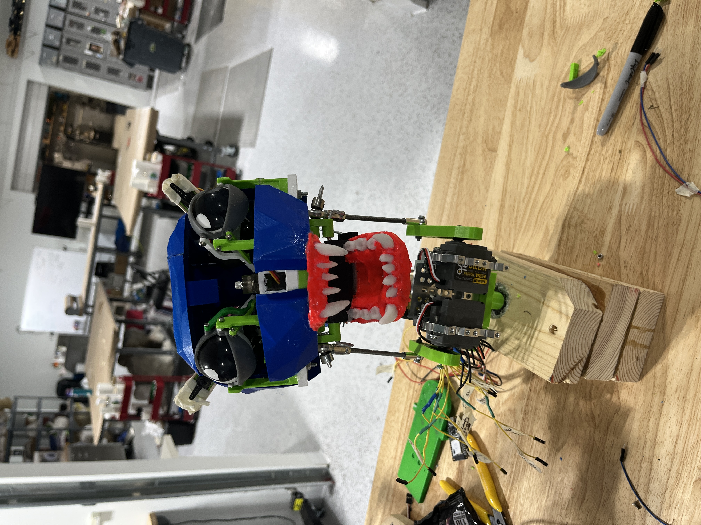
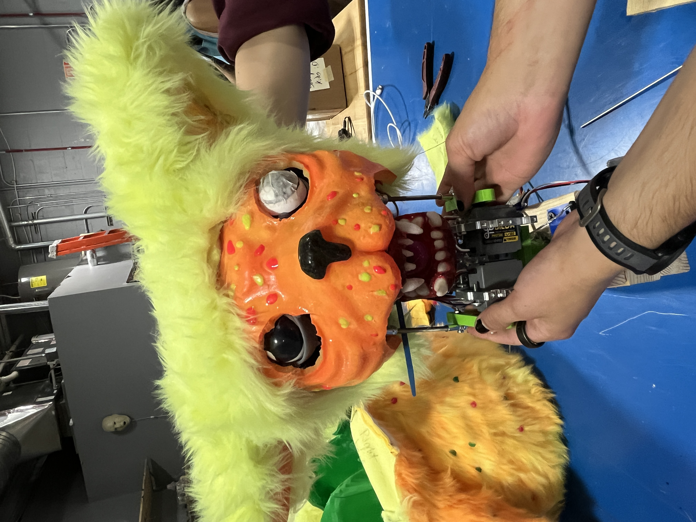
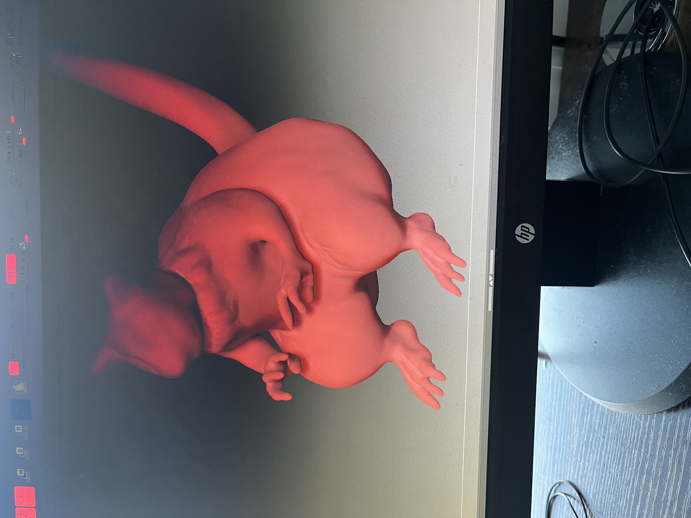
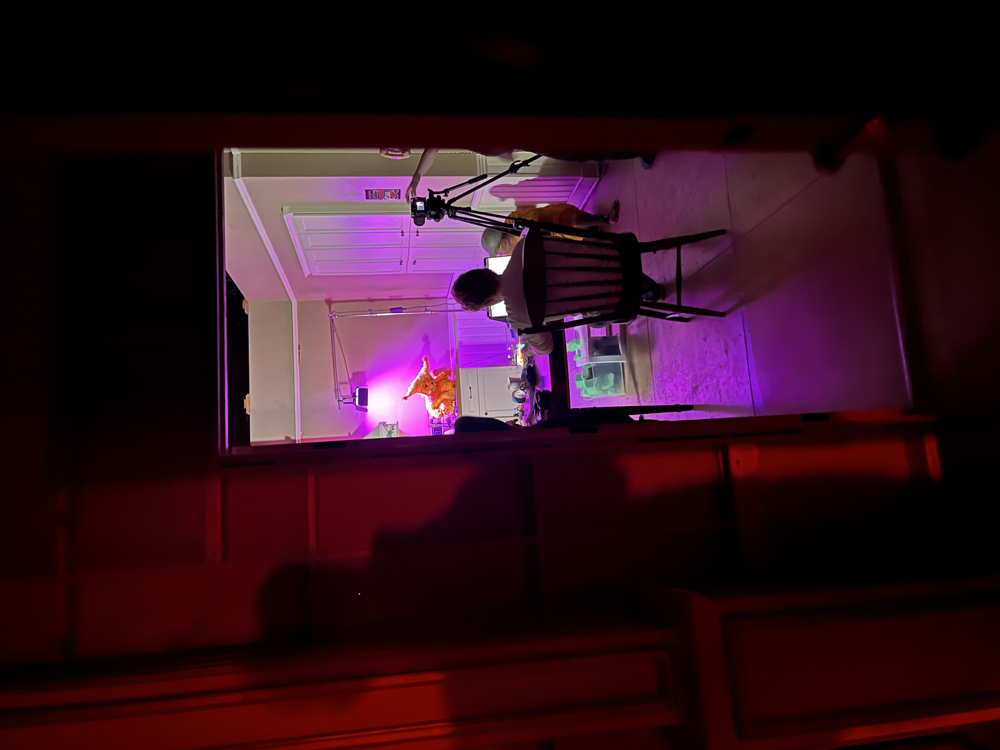
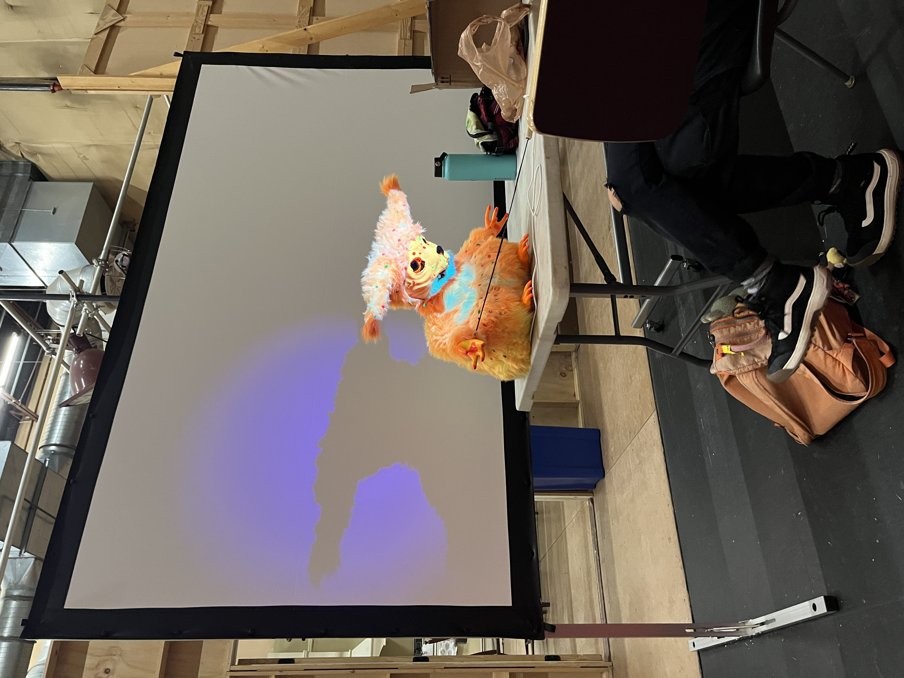
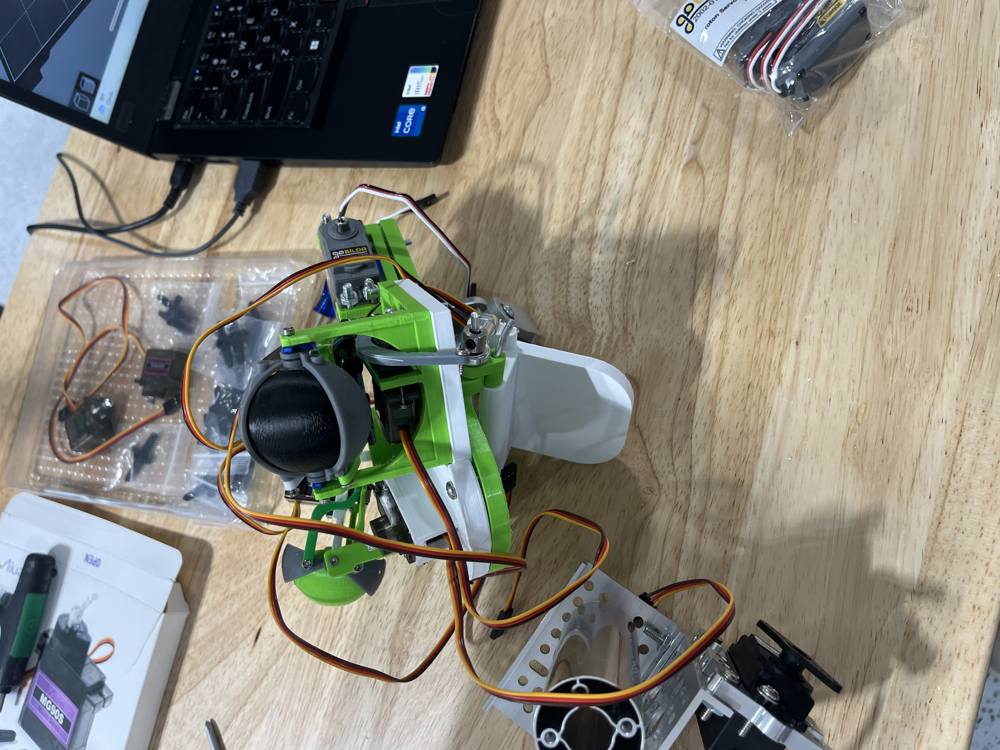
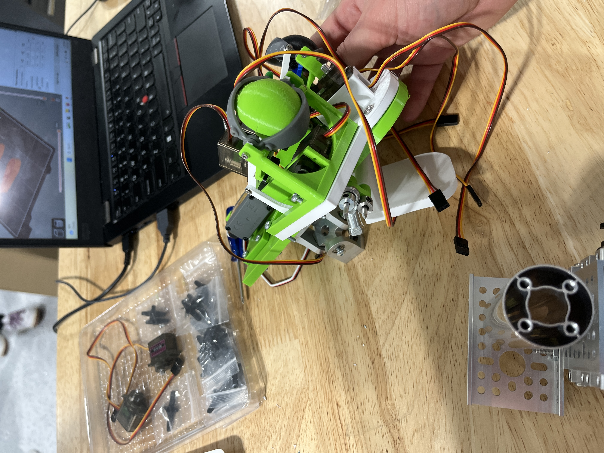
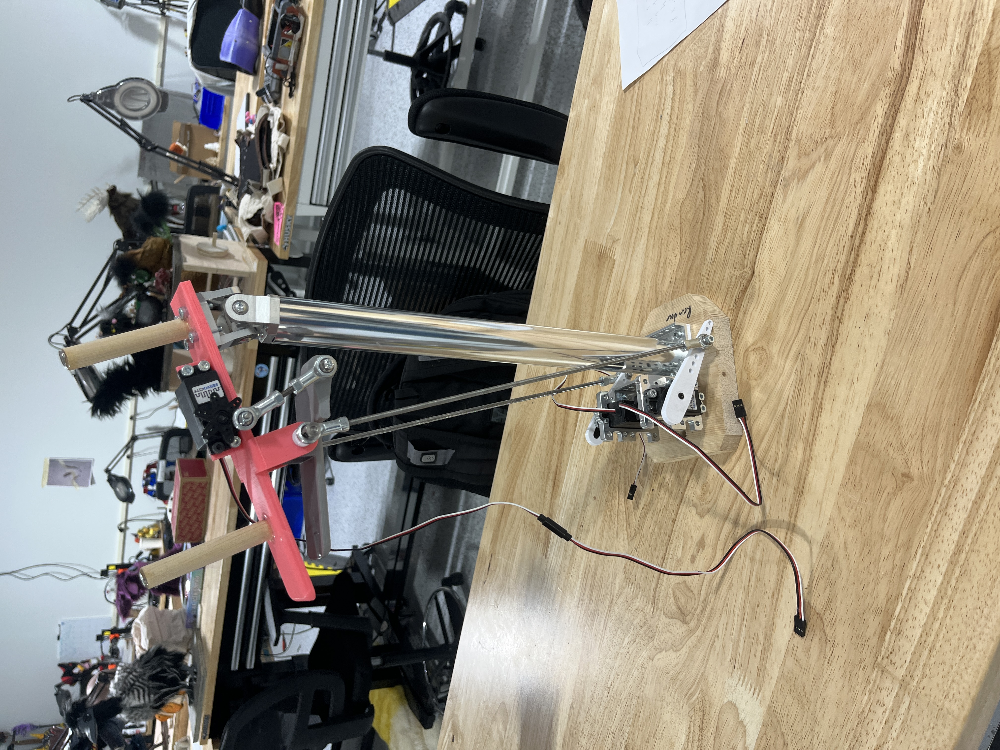

Sour Patch Monster (Bingus)
A glow in the dark sour patch kids themed monster which was used
in a project by the film department. I designed, fabricated, and assembled
the entirety of the mechanics for this animatronics based off of
previously made animatronics by the school as well as with guidance from
my team lead, teachers, and other students. I created the design in Fusion 360
and 3D printed it in parts. I also sculpted his body in Z Brush which was used to
support his fur as well as his hands and feet. I worked with another student to wire controllers connected
to an ESP32 which allowed us to control Bingus remotely.









Previous school animatronic I used as reference